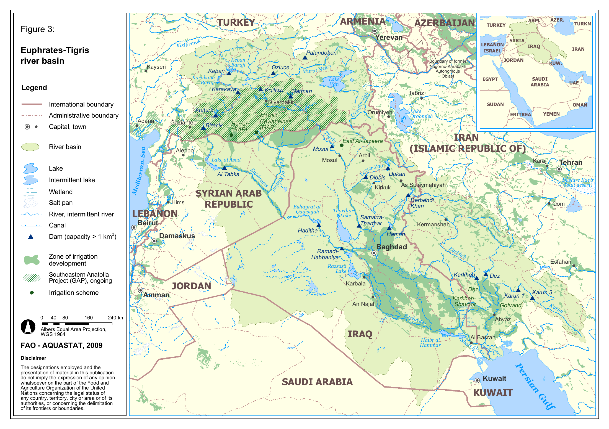
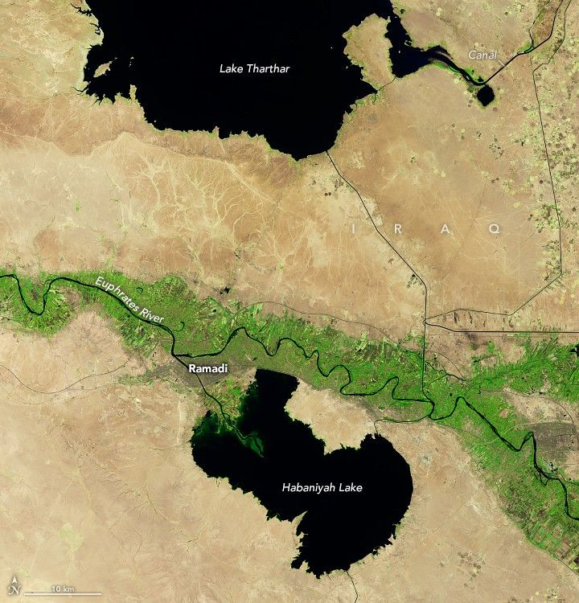
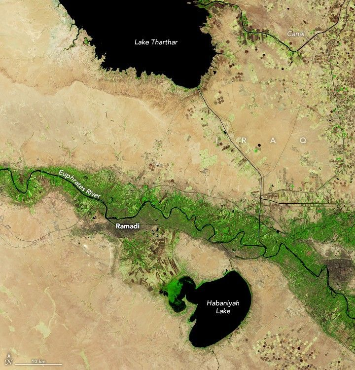

Introduction
The book of Revelation describes seven trumpets — blasts of warning that shake the earth before the final judgment. These are not random disasters; they are alarms, each growing louder, each harder to ignore.
If Babylon 2.0 is the system of control, the trumpets are the alarms that system cannot silence. And when you look around, it’s hard not to notice the echoes. Here I’m following one contemporary, largely futurist reading of Revelation—not the only Christian reading, and not a claim that every modern disaster is coded prophecy. The images are powerful enough without pretending every resemblance is proof.
Trumpet 1 — Fire on the Earth
Revelation 8:7: “Hail and fire followed, mingled with blood, and they were thrown to the earth. And a third of the trees were burned up, and all green grass was burned up.”1
What it says: Hail and fire mixed with blood strike the land; a third of the trees and all green grass are burned. John paints a scene of judgment on a scale no ordinary wildfire can contain.
Modern echo: War, nuclear blasts, drought, and wildfires have left real landscapes scarred. They make the image feel close—but they do not demonstrate that this trumpet has sounded, and I would not hang the argument on a broad “one-third of the trees” statistic without a specific region, date, and source.
Trumpet 2 — Mountain in the Sea
Revelation 8:8–9: “Something like a great mountain, burning with fire, was thrown into the sea… a third of the sea became blood.”
What it says: Something “like a great mountain burning with fire” is thrown into the sea; the vision turns violent water, death, and wrecked ships into one apocalyptic tableau.
Modern echo: Volcanic eruptions and oil spills are terrifying enough without being drafted as proof. A volcanic eruption or oil spill can bring the imagery to mind; an oil slick is black, not literally blood-red, and resemblance alone cannot identify John’s symbol.
Trumpet 3 — Wormwood
Revelation 8:10–11: “A great star fell from heaven, burning like a torch”… “The name of the star is Wormwood”… “A third of the waters became wormwood, and many men died from the water, because it was made bitter.”1
What it says: A blazing star called Wormwood makes waters bitter, and many die. The name lands like a chilling literary coincidence when we remember Chernobyl.
The historical echo: The 1986 reactor disaster released radioactive material across Europe and contaminated nearby soils and waters. But the name needs care: Ukrainian Chornobyl names mugwort, a plant related to wormwood; translating it simply as “wormwood” blurs the botanical distinction. The wordplay is striking, not proof that Revelation predicted the accident.2 3
Trumpet 4 — Darkened Skies
Revelation 8:12: “A third of the sun was struck… a third of the day kept from shining.”
What it says: Darkness covering skies.
Modern echo: Ash, smoke, and smog can turn daylight strange. Kuwait’s 1991 oil-well fires burned for months; satellite images captured immense smoke plumes crossing the region. That is a documented darkness beneath the plumes—not a measured third of the sun going dark across the world.4 5
Trumpet 5 — The Locusts and the Wars of Torment
Revelation 9:1–6: The abyss opens; locust-like creatures sting and torment people for five months, but are not permitted to kill them. It is one of the strangest and most unsettling scenes in the book.
One way to read it: The image may point to spiritual forces, human armies, a historical crisis, a future event—or a pattern of torment that repeats. Christians disagree about how Revelation’s visions map onto history.7 My modern reading is an invitation to notice echoes, not a timestamp everyone must accept.
What makes the echo feel close:
- Wars and dread — Wars, military buildups, drone strikes, and threats dominate headlines. It can feel as if the whole world is waiting for the next spark. That feeling is real; it does not by itself prove that John’s fifth trumpet is sounding.
- Gaza — The suffering is a spiritual and human tragedy, and Palestinian Christians are among the people affected. But “Christians killing Christians” is not an accurate description of the war. The region’s biblical history can make every headline feel charged with prophecy; geography alone cannot settle the interpretation.8
- Torment without a clean ending — Conflict, displacement, trauma, and addiction leave people suffering long after a headline moves on. Those wounds deserve compassion in their own right; we should not turn mental illness or modern medicine into proof of an apocalyptic symbol.
My reading: the Fifth Trumpet’s echo is hard to ignore. But I cannot honestly call that a proven identification. The vision is stranger—and the evidence more complicated—than a headline match.
Trumpet 6 — The Euphrates Hourglass
Revelation 9:13–16: “The sixth angel… released the four angels bound at the great river Euphrates,” followed by a mounted force numbered at two hundred million and the death of a third of mankind.1

What it says: At the sixth trumpet, four angels bound at the Euphrates are released; the vision then names a mounted force of two hundred million and the death of a third of humanity.1 It names the river—but it does not say the river must dry before the angels can be released.
The second passage: The Euphrates appears again in Revelation 16:12, where it dries to prepare the way for kings from the east. Same river, different vision. The text never explicitly says the drying releases Revelation 9’s angels or that the two forces are identical. Connecting them is a compelling interpretation, not a direct quotation.
What we see: The Euphrates basin is under real water stress. NASA satellites measured a loss of stored freshwater across the wider Tigris–Euphrates study region from 2003 to 2009, much of it attributed to groundwater pumping. More recently, NASA documented Iraq’s Lake Tharthar at a satellite-record low after years of poor rain and snow and upstream diversions. That is serious for people and ecosystems; it is not a countdown clock proving the whole river is about to vanish.6 9


Five years apart: NASA’s images show shrinking reservoirs alongside the river—not the entire Euphrates disappearing. The water crisis is visible; what it means prophetically is the question that keeps me watching. NASA Earth Observatory.
Why I keep watching it: The Euphrates isn’t an anonymous image; Revelation names it. A real river, still running through lives and borders, is under pressure. That directness makes it one of the most arresting signs to me. Whether today’s decline fulfills those visions is the part no single satellite image can settle.
The meaning: The drying river can still feel like an hourglass of prophecy. For some readers, the shared name is a deliberate thread between the trumpet and the bowl. For others, it is not a modern timetable. Revelation names several places; the Euphrates is a striking one, not its only geographic marker. The question is worth asking—the answer is not settled by a satellite image.
Trumpet 7 — The Final Blast
Revelation 11:15: “The seventh angel sounded… voices in heaven said, ‘The kingdom of the world has become the kingdom of our Lord and of His Christ.’”1
What it says: The final handover — God’s kingdom replaces man’s. Lightning, thunder, earthquakes, judgment follow.
In this reading: The seventh trumpet is still ahead: the kingdom of the world becomes the kingdom of God and Christ. Revelation’s next scenes thunder with judgment and victory. Other Christian readings place these visions differently in history, but the hope at the center is unmistakable: evil does not get the last word.
Closing Thought
The trumpets are prophecy—and pattern. Their images keep finding echoes in the world outside our window: fire on land, blackened skies, bitter water, locust-like terror, a river carrying the weight of history.
But an echo is not a receipt. Chornobyl’s name is more complicated than the Wormwood connection suggests. The Euphrates’ decline has human causes as well as prophetic meaning for readers who see it that way. Wars and disasters are real without needing to be forced into John’s symbols.
My honest read? I can’t prove we are living through the Fifth Trumpet. I can say the imagery keeps tugging at the headlines—and the shared Euphrates passages leave a question I can’t simply shrug off. Are these only echoes, or are the alarms getting louder?
The question is not settled. That is what makes the watching—and the warning—matter.
Sources & Trailheads
Start with the passages themselves; then follow the evidence behind the modern parallels. The sources support the historical claims, not a verdict that prophecy has been fulfilled.
- Revelation 8–11 and 16, New King James Version — the seven trumpets and the later Euphrates passage.
- Mary Mycio, Wormwood Forest, National Academies Press — Chernobyl/Chornobyl and the distinction between mugwort and wormwood.
- International Atomic Energy Agency, Chernobyl’s Legacy — radioactive fallout and contamination of land and water after the 1986 accident.
- NASA, Kuwait Oil Fires — the 1991 fires and their duration.
- NASA Technical Reports Server, “The Kuwait Oil Fires” — satellite observations of the smoke plumes.
- NASA Earth Observatory, “Freshwater Stores Shrunk in Tigris-Euphrates Basin” — regional water-storage changes; not a forecast that the Euphrates will disappear.
- Zondervan Academic, “7 Tips for Understanding Revelation” — an accessible overview of major interpretive approaches.
- Associated Press, report on the strike at Gaza’s Holy Family Church — reporting on civilians and a Christian community caught up in the war.
- NASA Earth Observatory, “Iraq Reservoirs Plunge to Low Levels” — Landsat comparison from September 2020 and September 2025 and satellite observations of low reservoir levels.
- FAO AQUASTAT, “Euphrates-Tigris River Basin” (map, 2009) — basin geography and infrastructure; open the original detailed map.